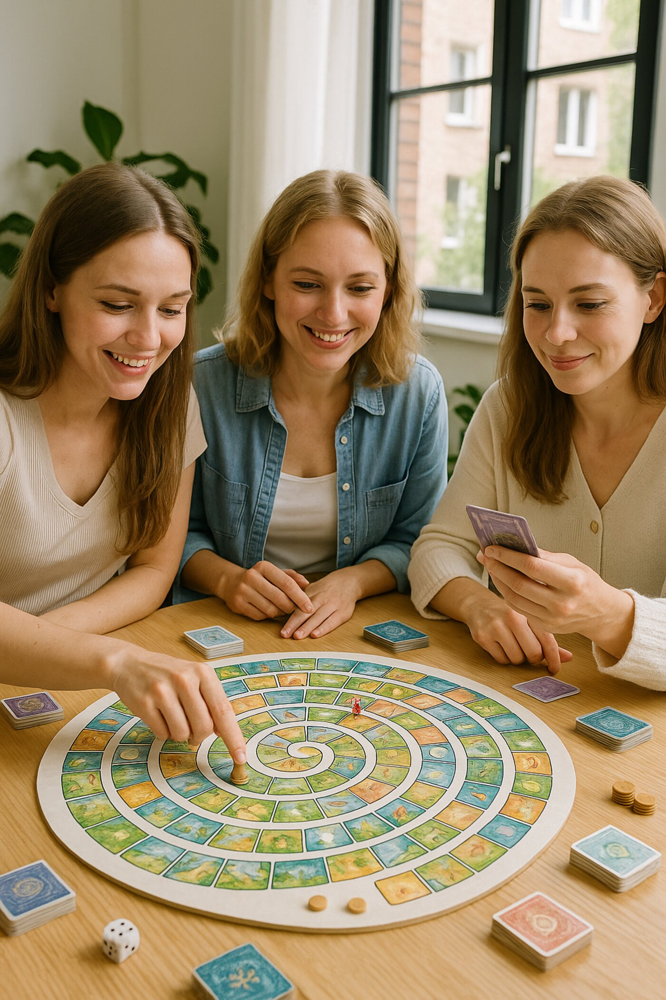

Kristina Rapoport

Kristina Rapoport
Psiholog · gestalt-terapeut · facilitatoare „Genesis”
Psiholog practician și gestalt-terapeut. Ghidează jocul transformațional „Genesis” fizic, însoțind cu grijă fiecare participantă.
Joc transformațional autoral (Evgeny Geller și Linda Lochmane, 2010) — o muncă psihologică profundă cu o cerere reală, într-o singură seară. Ghidează Kristina Rapoport, psiholog practician și gestalt-terapeut.
„Genesis” este un joc psihologic autoral, creat de Evgeny Geller și Linda Lochmane. Formulezi o cerere reală — un scop, o alegere, o relație — și parcurgi tabla de joc prin patru niveluri: corpul (acțiuni și resurse), emoțiile (trăirile), mintea (planuri și conștientizări) și integrarea. Cărțile și întrebările îți focalizează atenția, iar psihologul de alături te ajută să legi ce vezi de viața ta.
Nu este ghicit și nici training. La fel ca retreaturile Drivit, „Genesis” e despre o întâlnire sinceră cu tine — doar concentrat, într-o seară, cu un pas-rezultat concret la final.

Un cerc mic, contact viu cu ceilalți și sprijinul ghidei alături. Format de cerc de femei la masa de joc.
Unu la unu cu psihologul — profund și în ritmul tău, complet adaptat cererii tale.
Datele le formăm după cererile participantelor. Lasă o cerere — alegem un timp și un format potrivit.
| Format | Data | Înscriere |
|---|---|---|
| Grup · Chișinău | se precizează | la cerere |
| Individual · Chișinău | prin înțelegere | la cerere |
Jocul durează 4–6 ore — este o întâlnire amplă, nu o consultație scurtă. Datele apropiate le potrivim după cererile participantelor: lasă o cerere și îți propunem ora și formatul.
Înscrie-te la „Genesis”Nu. „Genesis” este un instrument psihologic: tabla și cărțile focalizează atenția, iar alături lucrează un psiholog practician și terapeut gestalt. Fără preziceri.
Nu. Ai nevoie de o întrebare reală — un scop, o alegere sau o relație la care vrei să te gândești serios. Restul îți explică gazda pe loc.
O seară. Formatul e gândit ca o muncă concentrată: vii cu o întrebare și pleci cu un pas concret.
Ambele sunt posibile. În grup ajută reacția vie a celorlalte, unu la unu — mai profund și complet pe întrebarea ta.
Da. Tot ce s-a spus în timpul jocului rămâne acolo. Fără expuneri publice.
E aceeași muncă, la scări diferite: „Genesis” — o întâlnire sinceră cu tine într-o seară, retreatul — aceeași muncă timp de trei zile, într-un cerc de femei.
Psiholog practician și gestalt-terapeut. Ghidează jocul transformațional „Genesis” fizic, însoțind cu grijă fiecare participantă.